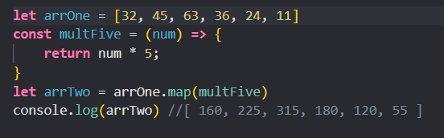
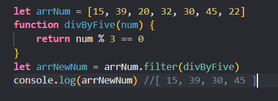
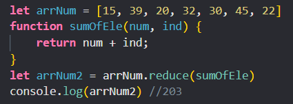

A functional approach to loops is preferred because it promotes code that is more concise, easier to read, and less prone to errors. In functional programming, the focus is on using higher-order functions and immutable data structures to transform data rather than on explicit iteration with loops. This approach allows for more declarative and composable code.
To implement a functional approach to loops without side effects, you can use higher-order functions such as map, reduce, filter. These functions take a collection of data and a function that transforms or filters the data in some way. By passing pure functions as arguments to these higher-order functions, you can ensure that your code has no side effects.
  Node modules provide a way to organize and share code in Node.js applications, making it easier for developers to build scalable and efficient network applications.
When serving static files, there are several security considerations that should be taken into account to ensure that the server
and the files remain secure.
a) Access control - ensure that only authorized users have access to the files, and prevent unauthorized users from
accessing or modifying them.
b) Encryption - use encryption to secure the transmission of files over the network, especially if sensitive data
is being transmitted.
c) Malware protection - scan files for viruses and malware to prevent them from being uploaded or downloaded onto
the server.
d) Backup and recovery: Regularly backup static files to ensure that they can be recovered in case of a
security breach or other data loss event.
To serve static files securely in an Express application, we can use the built-in express.static
app.use(express.static("public"));